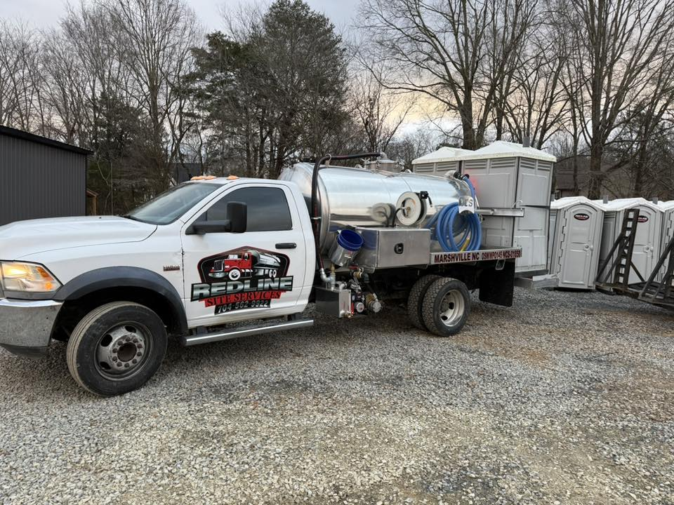

Septic Emergencies We Handle
A septic emergency means wastewater has nowhere to go — it's either backing up into your home or surfacing where it shouldn't. These situations need immediate attention, not a next-week appointment.
Sewage backup into the home
Raw sewage coming up through floor drains, toilets, or the lowest fixtures is a critical failure requiring immediate response.
Sewage surfacing in the yard
Wet, foul-smelling areas over the drain field mean the field is no longer accepting flow — a health hazard and a system failure.
Alarm system triggered
Aerobic and pump-controlled systems have alarms for a reason. An active alarm means something in the system needs immediate attention.
Broken or collapsed pipe
A broken distribution pipe can cause a sudden blockage and system backup. We locate and repair the damaged section same-day when possible.
Full tank overflow
An overflowing septic tank — from a missed pump-out or excessive water use — requires emergency pumping to restore flow.
Sewage odor inside the home
Strong sewer gas inside the house can indicate a failed trap, broken baffle, or ventilation issue — all of which we diagnose on-site.
What to Do Right Now
While you wait for our crew to arrive:
- Stop using water — turn off the washing machine, avoid flushing toilets, and don't run the dishwasher. Every gallon adds pressure to an already-overwhelmed system.
- Keep people and pets away from any sewage-affected areas in the yard. Raw sewage is a health hazard.
- Don't open the septic tank yourself. The gases inside can be dangerous and the structural condition of the lid may be compromised.
- Don't use drain cleaners or additives. They won't help and can make diagnosis harder.
Call us first, county second. Many homeowners call the county health department as their first step. We recommend calling us first — we can diagnose the issue faster and help you understand what the county will require before you're in that conversation.
Emergency Septic Pumping in Monroe & Union County
If the tank is full, overflowing, or causing an active backup, emergency septic pumping may be the fastest way to restore flow and reduce damage. If pumping reveals a broken line, baffle issue, or drain field problem, we explain the repair options before work begins.
Our Emergency Response Process
1
You call, we answer
Redline answers emergency calls 24 hours a day. We'll ask a few quick questions to understand the situation and dispatch the right crew.
2
On-site diagnosis
We assess the tank level, the drain field condition, any pipe damage, and the cause of the failure — before recommending a fix.
3
Clear estimate before work starts
You'll know exactly what the repair involves and what it costs before we do anything. No surprises.
4
Repair and follow-up
We complete what we can same-day. If a permit is needed for further work, we'll handle the coordination and give you a timeline.
Frequently Asked Questions
Do you actually respond at night and on weekends?
Yes. Redline has a live emergency line, not an answering service. We serve Monroe, Indian Trail, Waxhaw, and surrounding Union County communities around the clock.
Is emergency service more expensive?
We don't tack on hidden after-hours fees. You'll get a clear estimate before any work starts regardless of when you call.
Can you fix it in one visit?
Often yes for backups caused by a full tank or a single broken line. For drain field failures or situations that require permits, we'll stabilize the system and give you a clear plan for the full repair.
My alarm is going off but everything seems fine — do I still need to call?
Yes. Septic alarms don't false-trigger. Something in the system needs attention even if the symptoms aren't obvious yet. Catching it early is almost always cheaper than waiting for a backup.
Do you provide emergency septic pumping throughout Union County and Cabarrus County?
Yes. Redline provides 24/7 emergency septic pumping and repair throughout Monroe, Indian Trail, Waxhaw, Wesley Chapel, Stallings, Lake Park, Mineral Springs, Concord, Kannapolis, Harrisburg, Midland, Matthews, and surrounding communities. One call reaches a live person any time of day or night — no answering service.
Areas We Serve
Emergency septic service available throughout: